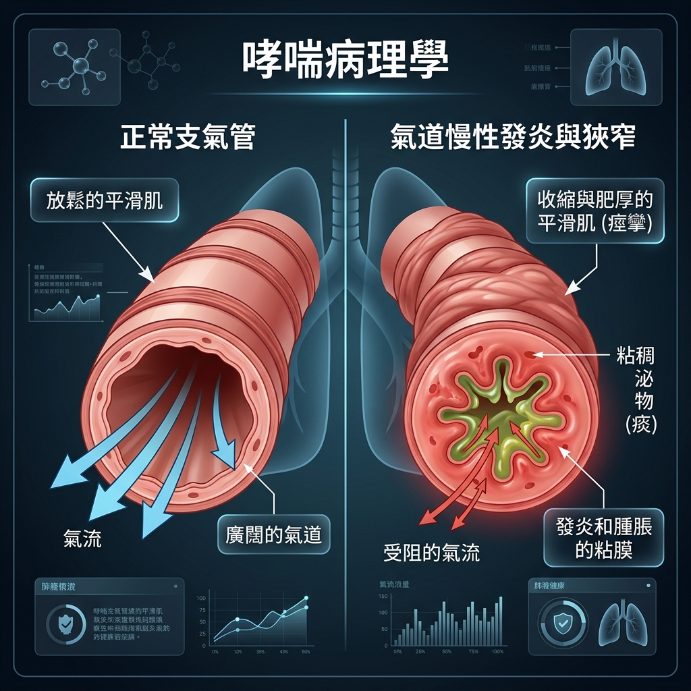
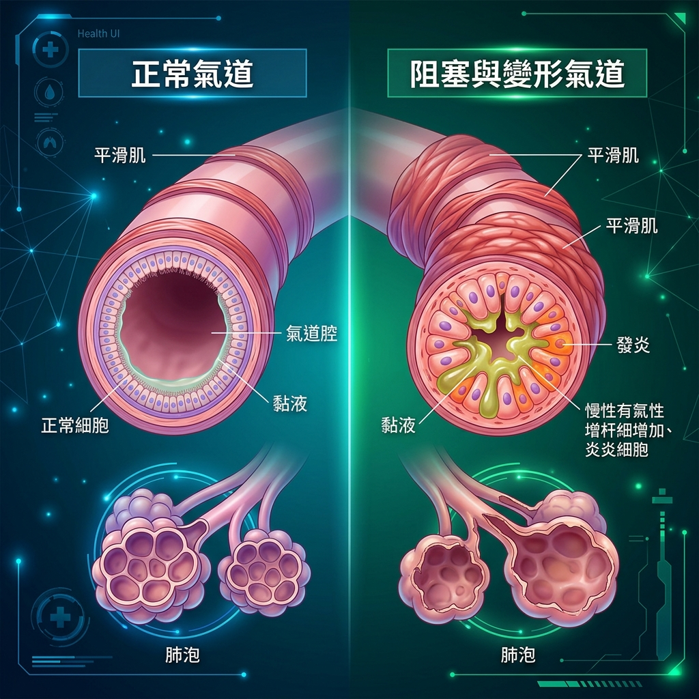

📉 β 細胞功能的自然衰退與特休
病友常因為「要吃更多藥」或「要打針」而感到自責。其實，胰島細胞功能退化是一個生理上的必然過程，並非您的過錯。
👆 點擊圖表中的圓點，查看對應病程的去污名化解說與建議 👆
確診第 0 年 (胰島細胞功能剩餘約 50%)
在您被診斷出糖尿病的第一天，胰島細胞便已經自然退化了將近一半。這不是因為您做錯了什麼，而是身體身體機能的自然耗損。請配合醫囑，積極吃藥保護殘存功能！
🚦 個人化控糖紅綠燈 & eAG 換算
⬅️ 拖動滑桿調整糖化血色素 (A1C) 值 ➡️
🟢 綠燈安全 (A1C < 7.0%)
控糖模範生！併發症發生機率降到最低。
日常口訣：「血糖乖乖聽話，血管跟著輕鬆、全家都安心！」
📖 實證文獻：NEJM 2008 (ACCORD trial / ADVANCE trial)【Level 1b, 大型 RCT】
📋 血糖與糖化血色素 (HbA1c) 臨床診斷標準
依據中華民國糖尿病學會臨床照護指引：
| 分類 | 空腹血糖 (Fasting Glucose) | 糖化血色素 (HbA1c) | 臨床狀態與處置建議 |
|---|---|---|---|
| 🟢 正常血糖 | < 100 mg/dL | < 5.7% | 良好狀態。維持均衡飲食、規律運動，每年定期篩檢一次。 |
| 🟡 糖尿病前期 | 100 - 125 mg/dL | 5.7% - 6.4% | 血糖警報！胰島 β 細胞已開始疲勞。此階段為「逆轉黃金期」，藉由飲食控制與每週 150 分鐘有氧運動，極大機會可恢復正常。 |
| 🔴 糖尿病 | ≥ 126 mg/dL | ≥ 6.5% | 正式確診。應儘速接受專科醫師治療，合理使用第一線降血糖藥，守護全身血管。 |
目標範圍內時間 (TIR)：血糖維持在 70-180 mg/dL 的時間佔比。點選您今天的作息或飲食，看預期的 TIR 變化：
🟢 表現良好！TIR > 70% 代表血糖波動平穩，低血糖與併發症風險極低！
👣 全身血管保衛戰：併發症地圖
🧠 腦血管病變 (腦中風 | 缺血性中風風險增加 1.5 - 2.5 倍)
📊 發生比例：盛行率約 7.6% (糖尿病患者中風風險是非糖尿病患的 1.5 - 2.5 倍)
📖 實證文獻：ADA Care Guidelines 2026【Level 1a】
👁️ 眼底視網膜病變 (全球盛行率 22.3% | 罹病20年以上達 60% - 80%)
📊 發生比例：全球約 22.3% (罹病超過 20 年盛行率達 60% - 80%，增殖性 PDR 約 6%)
📖 實證文獻：Ophthalmology 2023; 130【Level 1a】
🫀 心血管疾病 (盛行率 12.7% - 21.9% | 風險高 2 - 4 倍)
📊 發生比例：冠狀動脈疾病約 12.7% - 21.9% (心肌梗塞風險高出 2 - 4 倍)
📖 實證文獻：Lancet 2018; 391【Level 1a】
🩺 糖尿病腎臟病變 (盛行率 30% - 40% | 佔洗腎 45% - 47%)
📊 發生比例：最終發展為 DKD 約 30% - 40% (台灣洗腎患者中有 45% - 47% 由糖尿病引起)
📖 實證文獻：KDIGO Clinical Practice Guideline 2024【Level 1a】
👣 周邊神經與足部病變 (神經病變約 50% | 足潰瘍 19% - 34%)
📊 發生比例：神經病變約 50%、足潰瘍累積率 19% - 34% (5年死亡率達 30%)
📖 實證文獻：ADA Diabetes Care 2025【Level 1a】 / Lancet 2020; 396【Level 2a】
🧫 KDIGO 糖尿病慢性腎臟病 (CKD) 風險與監測矩陣
🔍 腎功能快速評估
| eGFR / UACR | A1 正常至輕微 < 30 mg/g |
A2 中度增加 30-300 mg/g |
A3 重度增加 > 300 mg/g |
|
|---|---|---|---|---|
| G1 | ≥90 |
低風險 1次/年 |
中度 1次/年 |
高風險 2次/年 |
| G2 | 60-89 |
低風險 1次/年 |
中度 1次/年 |
高風險 2次/年 |
| G3a | 45-59 |
中度 1次/年 |
高風險 2次/年 |
極高 3次/年 |
| G3b | 30-44 |
高風險 2次/年 |
極高 3次/年 |
極高 ≥3次/年 |
| G4 | 15-29 |
極高 3次/年 |
極高 ≥3次/年 |
極高 ≥4次/年 |
| G5 | <15 |
極高 ≥4次/年 |
極高 ≥4次/年 |
極高 ≥4次/年 |
💓 高血壓控制目標與 722 法則
🎯 控制標準：< 130/80 mmHg
根據《2022台灣高血壓治療指引》，對一般人與糖尿病患而言，積極將血壓控制在 130/80 mmHg 以下，能最有效保護心腦血管與腎臟，降低心血管死亡率。
🏠 居家血壓測量黃金公式：「722 法則」
• 7：連續量 7 天（健檢前或調整藥物時）。
• 2：天天量 2 次（早上起床後1小時內、晚上睡前1小時內）。
• 2：每次量 2 遍（每次間隔1分鐘，取兩次平均值以防誤差）。
📋 血壓分類與控制目標 (2022 台灣高血壓指引)
測量均以安靜狀態下的診間或居家測量平均值為準：
| 血壓分類 | 收縮壓 (Systolic / 高壓) | 舒張壓 (Diastolic / 低壓) | 臨床處置與照護建議 | |
|---|---|---|---|---|
| 🟢 正常血壓 | < 120 mmHg | 與 | < 80 mmHg | 良好狀態。維持健康低鈉飲食與運動，每年定期測量一次。 |
| 🟡 血壓偏高 | 120 - 129 mmHg | 與 | < 80 mmHg | 血管開始緊繃！建議調整生活型態（限制鈉鹽、減重、規律有氧），每 3-6 個月追蹤。 |
| 🔴 高血壓 | ≥ 130 mmHg | 或 | ≥ 80 mmHg | 已達診斷標準。應諮詢醫師，開始生活型態介入，並視風險配合藥物治療，控制目標 < 130/80。 |
⚠️ 血管硬化與風險倍增警告
當收縮壓每增加 20 mmHg，舒張壓每增加 10 mmHg，心血管死亡風險將呈現翻倍 (指數級) 增長！
* 註：從基準血壓 115/75 mmHg 開始，收縮壓每增加 20 mmHg 且舒張壓每增加 10 mmHg，心血管死亡風險便會**翻倍增長**。
📊 高血壓引發之慢性併發症與風險數據
高血壓是隱形的殺手，長期忽視會導致全身血管與器官病變：
🧠 腦血管中風 (Stroke)
高血壓是出血性及缺血性中風最主要的關鍵因素。控制在 130/80 以下可大幅改善。
🫀 心肌梗塞與冠心病
長期高血壓加速冠狀動脈粥狀硬化與血管狹窄，引發心肌梗塞與心臟衰竭。
💥 主動脈剝離 (Dissection)
高達 80% 的急性主動脈剝離患者有高血壓病史，血壓爆表是導致血管內皮撕裂的最危險因子。
🩺 末期腎衰竭 (ESRD)
高血壓使腎絲球內壓力過高，加速纖維化與硬化，是台灣僅次於糖尿病的洗腎次要原因。
🥑 壞膽固醇 (LDL-C) 控制目標
高血脂的關鍵在於**低密度膽固醇 (LDL-C，又稱壞膽固醇)**。它會卡在血管壁上，形成粥狀硬化斑塊，就像老舊水管被油脂塞住一樣。
一般人目標
糖尿病或 CKD
合併心血管病史
🎚️ 血管卡油斑塊互動模擬器
調整下方的 LDL-C 壞膽固醇值，觀察膽固醇對血管腔狹窄程度 of 影響：
🟡 中度斑塊累積 (糖尿病控制標準邊緣)
血管開始累積粥狀斑塊，已比正常人狹窄。需注意飲食，減少動物飽和脂肪，並視情況配合降脂藥物 (Statin)。
🥩 高尿酸血症與痛風石危機
🎯 尿酸控制目標：< 6.0 mg/dL
血中尿酸過高時，會在關節腔、軟骨或腎臟沈澱形成「尿酸鈉鹽結晶」。一旦發炎，會導致關節紅腫熱痛，這就是**痛風發作**。長期未控制，結晶會堆積成硬塊，也就是**痛風石**，甚至造成關節變形與腎結石、腎衰竭。
💡 專科醫師特別提醒：
對於已經出現痛風石關節變形的病友，控制目標應更嚴格設定在 < 5.0 mg/dL，才能有效溶解已經形成的關節結晶，保護腎功能免受結晶沈澱損傷！
🥦 飲食紅綠燈：吃對食物不發作
除了按時服用降尿酸藥物（抑制生成或促進排出），配合飲食調整可以大幅降低急性痛風發作頻率。
🔴 紅燈 (避免/禁用)
- 內臟類（豬肝、雞腎）
- 啤酒與各式烈酒
- 海鮮（蛤蜊、生蠔、蝦蟹）
- 火鍋濃肉湯、肉汁
- 高果糖糖漿飲料（手搖飲）
🟡 黃燈 (適量/限量)
- 紅肉類（豬、牛、羊肉）
- 一般魚類、雞肉
- 豆類與豆腐豆漿
- 菇類（香菇、金針菇）
- 蘆筍、菠菜、筍類
🟢 綠燈 (安心食用)
- 充足水分 (每天 > 2000cc)
- 低脂或無脂牛奶
- 雞蛋、精緻穀類（米、麵）
- 絕大多數蔬菜
- 櫻桃、含維生素C水果
🫁 氣喘控制、GINA 指引與 PEF 預估值試算
🌟 GINA 指引核心觀念：控制發炎是唯一關鍵
氣喘的核心病理是「氣道慢性發炎與狹窄」。這種慢性的氣道發炎會導致支氣管高度敏感，當遇到冷空氣、過敏原或感冒時，氣道平滑肌就會收縮痙攣，使管腔嚴重狹窄。全球氣喘創議組織 (GINA) 指引強調：

📊 正常支氣管 (左) vs 氣喘發作時平滑肌收縮、黏膜發炎腫脹及多痰導致之氣道慢性發炎與狹窄 (右)
⚠️ 緩解型吸入劑 (SABA / 急救擴張劑)
俗稱「急救吸入劑」（如沙丁胺醇）。完全沒有抗發炎作用！僅能暫時放鬆氣管。過度依賴急救劑（每年用超過 3 支）會讓發炎加劇，急性發作死亡率增高。
🛡️ 控制型吸入劑 (ICS / 每日保養藥)
含有極低劑量的吸入型類固醇 (ICS)。直接作用於氣道，極少進入全身。必須每天規律吸入，才能真正保養氣管、防範氣喘急性發作！
📶 GINA 氣喘階梯式治療 (Stepwise Approach)
醫師會根據您的發作次數與肺功能，動態調整您的用藥階梯（升階/降階）：
* 註：當症狀良好控制 3 個月以上，可在醫師指導下評估「降階治療」減少劑量，切勿擅自停藥。
📊 尖峰呼氣流速 (PEF) 預估值快速試算
尖峰呼氣流速代表您用盡全力吐氣時的最大氣流速度。輸入身高、年齡、體重，試算您的預估正常值：
📋 氣喘控制測試 (ACT) 國際評估問卷
請勾選您過去四週的狀況，評估氣喘控制情形：
1. 氣喘讓您無法完成工作、課業或日常活動的頻率？
2. 您覺得呼吸困難、氣喘不過來的頻率？
3. 氣喘症狀（喘鳴、咳嗽、胸悶）讓您夜間醒來或比平常早醒的頻率？
4. 您需要使用急救吸入劑（如支氣管擴張劑）的頻率？
5. 您覺得過去四週以來，您的氣喘控制得如何？
評估結果
🚬 慢性阻塞性肺病 (COPD) 衛教與臨床評估
🚭 認識肺阻塞 (COPD)：氣道退化與發炎
慢性阻塞性肺病 (COPD) 俗稱「肺阻塞」，主要由於**長期吸菸**或**長期暴露於二手菸、粉塵、空汙**，導致支氣管與肺泡慢性發炎.發炎會使支氣管狹窄、肺泡彈性喪失（肺氣腫），且這類肺功能受損是無法逆轉的。

📊 正常支氣管與肺泡 (左) vs 慢性肺阻塞發炎、黏液阻塞與管腔狹窄變形 (右)
📋 mMRC 呼吸困難量表（喘氣程度自我評估）
請選擇最符合您最近日常活動喘氣狀況的描述（單選）：
評估結果
📋 CAT 肺阻塞評估測試 (COPD Assessment Test)
針對以下 8 項日常生活影響指標，點選最符合您的狀況分數（0 分為完全無影響，5 分為影響極嚴重）：
評估結果
📋 GOLD 肺阻塞 Group A、B、E 臨床分組與用藥指引
根據最新全球肺阻塞創議組織 (GOLD) 指引，臨床上依據患者的症狀喘度與惡化風險史，將患者劃分為 Group A、B、E 三組以精準用藥：
| 分組 | 臨床指標定義 | 首選初始治療用藥 | 重要治療觀念 |
|---|---|---|---|
| Group A |
低症狀、低惡化風險： • 過去一年中重度惡化 ≤ 1 次 (且無住院) • mMRC 0 - 1 級 且 CAT < 10 分 |
單一長效或短效氣管擴張劑 • 首選: LAMA (長效抗膽鹼藥) 或 LABA (長效β2刺激劑) • 或有症狀時使用短效 SABA / SAMA |
症狀輕微，以緩解症狀並按需吸藥為主。 |
| Group B |
高症狀、低惡化風險： • 過去一年中重度惡化 ≤ 1 次 (且無住院) • mMRC ≥ 2 級 或 CAT ≥ 10 分 |
雙效長效氣管擴張劑 (Dual Bronchodilators) • LAMA + LABA 複方吸入劑 • 實證顯示雙效氣管擴張效果優於單一藥物 |
持續有喘鳴或多痰症狀，需規律吸入雙效擴張劑保養。 |
| Group E |
高惡化風險 (不論症狀多寡)： • 過去一年中重度惡化 ≥ 2 次 • 或曾有 1 次以上因肺阻塞住院 |
LAMA + LABA 雙效長效氣管擴張劑 • 特殊考量：若血中嗜酸性白血球 (EOS) ≥ 300 cells/μL，或合併氣喘，應考慮使用三合一吸入劑 (ICS + LAMA + LABA)。 |
惡化住院風險極高，必須規律吸藥以防急性發作與呼吸衰竭。 |
🔍 智慧 COPD GOLD 分組自我檢測
系統會自動結合您在上方點選的 mMRC (目前: 未點選) 與 CAT (目前: 未點選) 分數。請補充填寫過去一年的惡化史：
🌬️ 長者防喘呼吸與排痰技巧訓練
肺阻塞患者因為肺彈性變差，氣流受阻，常常覺得氣吐不乾淨、憋在肺裡。每日練習呼吸法可顯著舒緩喘度：
🌬️ 1. 縮唇呼吸法
步驟：用鼻子深吸氣 2 秒，嘴唇縮成像吹口哨一樣，緩慢吐氣 4-6 秒（吐氣時間為吸氣的 2 倍）。
原理：防止小氣道過早塌陷，把積留的二氧化碳排乾淨！
🧘 2. 腹式呼吸法
步驟：一手放胸口，一手放肚子。吸氣時肚子鼓起，吐氣時肚子扁下去，胸口不動。
原理：訓練橫膈膜，減少呼吸時的耗氧量與喘感。
🎽 預防代謝症候群：「三高加二便」
代謝症候群不是一個特定的疾病，而是一群**心血管危險因子的聚集指標**。符合代謝症候群的人，未來罹患糖尿病、高血壓、高血脂的機率會高出數倍！
📊 5 大指標自我篩檢
🥗 長者日常飲食與運動黃金建議
預防與逆轉代謝症候群，最有效且具備臨床實證的方法就是**調整生活飲食型態**與**規律身體活動**。以下為長者貼心設計的黃金守則：
🥦 1. 飲食調整：得舒飲食原則 (DASH)
- 多吃全穀雜糧：以糙米、燕麥、地瓜或南瓜，取代白米飯與白麵條，補充維生素 B 群與膳食纖維。
- 多吃蔬菜水果：每天建議 5 份蔬菜（如深綠色葉菜）與水果，補充足夠的鉀、鎂離子協助調節血壓。
- 優質蛋白質優先：以豆腐、豆漿、魚肉及去皮雞肉等白肉，取代紅肉（豬、牛肉），減少飽和脂肪攝取。
- 改用健康好油：使用橄欖油、芥花油，並每天補充一小把（約一湯匙）無調味堅果。
- 少鹽低鈉、減糖：每日鈉攝取量應小於 2000 毫克（約 5 克食鹽），避免加工食品與含糖手搖飲料。
🚶 2. 運動處方：333 有氧與阻力訓練
- 規律有氧運動：每週至少 3 次，每次 30 分鐘，達到微喘但仍可說話的程度。例如：快走、土風舞、太極拳、慢跑。
- 肌力阻力訓練：每週 2 次，針對大肌肉群進行阻力訓練，例如：坐在椅子上進行起立坐下（深蹲）、彈力帶伸展。能有效維持肌肉量，預防肌少症與跌倒。
- 減少久坐時間：每坐 50 分鐘應站起來活動 5-10 分鐘，每天以累積 6000 步到 8000 步為生活目標。
- 安全第一：運動前後要做好充足伸展與暖身，若有頭暈、胸悶、關節疼痛應立即停止。